Intermediate GGPlot Stats
Bill Perry
2018/03/14
##Load libraries ##Read files
# install.packages("devtools")
# devtools::install_github("thomasp85/patchwork")
# load the libraries each time you restart R
library(tidyverse)
library(lubridate)
library(scales)
library(skimr)
library(patchwork)
# read in the file
iris.df <- read_csv("data/iris.csv")
glimpse(iris.df)## Observations: 150
## Variables: 5
## $ Sepal.Length <dbl> 5.1, NA, 4.7, 4.6, 5.0, 5.4, 4.6, 5.0, 4.4, 4.9, 5.…
## $ Sepal.Width <dbl> 3.5, 3.0, 3.2, 3.1, 3.6, 3.9, 3.4, 3.4, 2.9, 3.1, 3…
## $ Petal.Length <dbl> 1.4, 1.4, 1.3, 1.5, 1.4, 1.7, 1.4, 1.5, 1.4, 1.5, 1…
## $ Petal.Width <dbl> 0.2, 0.2, 0.2, 0.2, 0.2, 0.4, 0.3, 0.2, 0.2, 0.1, 0…
## $ Species <chr> "setosa", "setosa", "setosa", "setosa", "setosa", "…##Here is the R script R script we might get through in class GGplot 3 R Script
##Simple summary statistics
We can use the skimr package to get simple summary statitstics but these are often not that helpful to look at the data
skim(iris.df)## Skim summary statistics
## n obs: 150
## n variables: 5
##
## ── Variable type:character ─────────────────
## variable missing complete n min max empty n_unique
## Species 0 150 150 6 10 0 3
##
## ── Variable type:numeric ───────────────────
## variable missing complete n mean sd p0 p25 p50 p75 p100
## Petal.Length 0 150 150 3.76 1.77 1 1.6 4.35 5.1 6.9
## Petal.Width 0 150 150 1.2 0.76 0.1 0.3 1.3 1.8 2.5
## Sepal.Length 1 149 150 5.85 0.83 4.3 5.1 5.8 6.4 7.9
## Sepal.Width 0 150 150 3.06 0.44 2 2.8 3 3.3 4.4
## hist
## ▇▁▁▂▅▅▃▁
## ▇▁▁▅▃▃▂▂
## ▂▇▅▇▆▅▂▂
## ▁▂▅▇▃▂▁▁##Skim_to_wide wide stats
skim_to_wide(iris.df)## # A tibble: 5 x 17
## type variable missing complete n min max empty n_unique mean
## <chr> <chr> <chr> <chr> <chr> <chr> <chr> <chr> <chr> <chr>
## 1 char… Species 0 150 150 6 10 0 3 <NA>
## 2 nume… Petal.L… 0 150 150 <NA> <NA> <NA> <NA> 3.76
## 3 nume… Petal.W… 0 150 150 <NA> <NA> <NA> <NA> "1.2…
## 4 nume… Sepal.L… 1 149 150 <NA> <NA> <NA> <NA> 5.85
## 5 nume… Sepal.W… 0 150 150 <NA> <NA> <NA> <NA> 3.06
## # … with 7 more variables: sd <chr>, p0 <chr>, p25 <chr>, p50 <chr>,
## # p75 <chr>, p100 <chr>, hist <chr>##Simple histograms
#Hitograms with GGPLOT
ggplot(data=iris.df, aes(iris.df$Sepal.Length)) +
geom_histogram() +
labs (title="Sepal Length", x="Sepal Length", y="Count")## `stat_bin()` using `bins = 30`. Pick better value with `binwidth`.## Warning: Removed 1 rows containing non-finite values (stat_bin).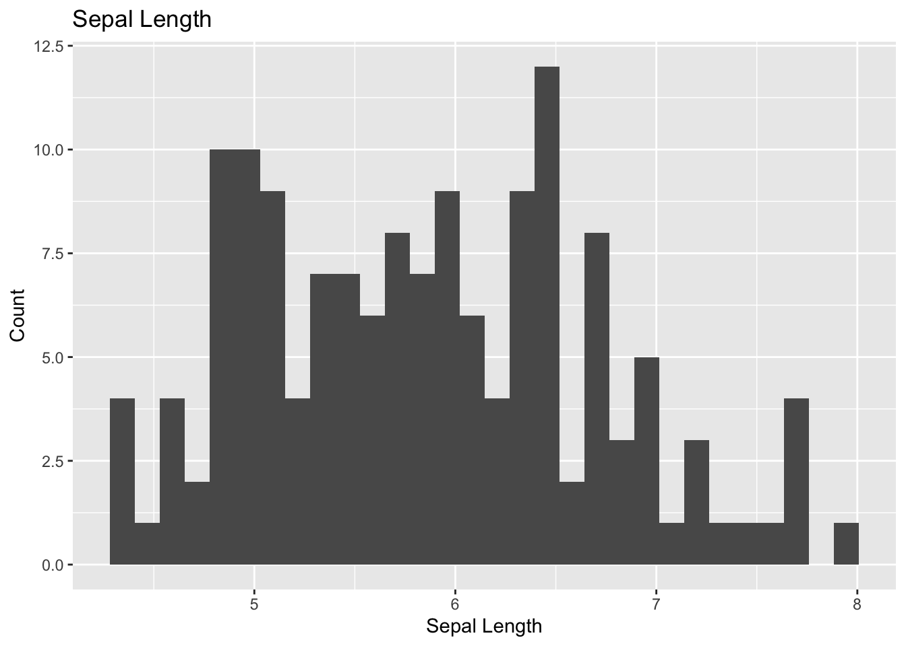
##Histogram binwiths
#Hitograms with GGPLOT
ggplot(data=iris.df, aes(iris.df$Sepal.Length)) +
geom_histogram(col="blue", fill="blue", alpha=.7, binwidth = 1) +
labs (title="Sepal Length", x="Sepal Length", y="Count")## Warning: Removed 1 rows containing non-finite values (stat_bin).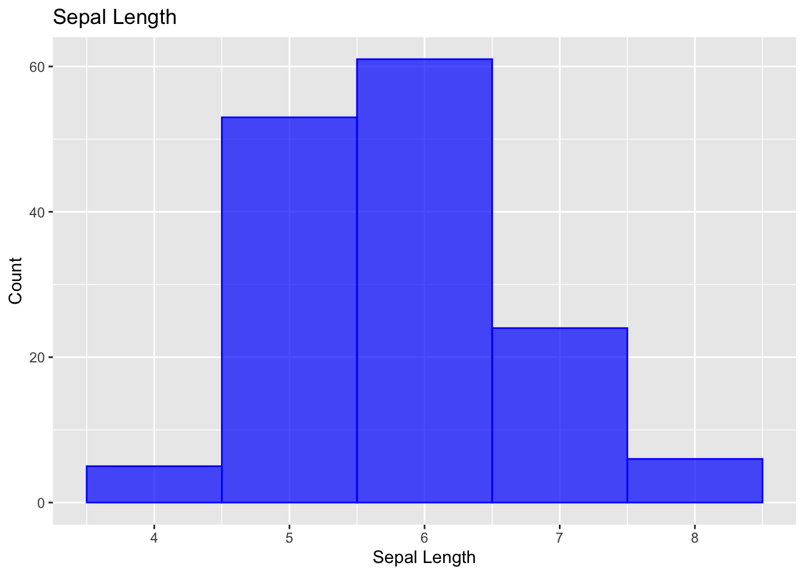
##Fccetted histograms
###What if you want to look at all of the species separately
ggplot(data=iris.df, aes(iris.df$Sepal.Length)) +
geom_histogram(binwidth = .5, col="blue", fill="blue", alpha=.7) +
labs (title="Sepal Length", x="Sepal Length", y="Count") +
facet_wrap(~Species, scales = "free") # allows the scales to be free and you can comment this out to see what happens## Warning: Removed 1 rows containing non-finite values (stat_bin).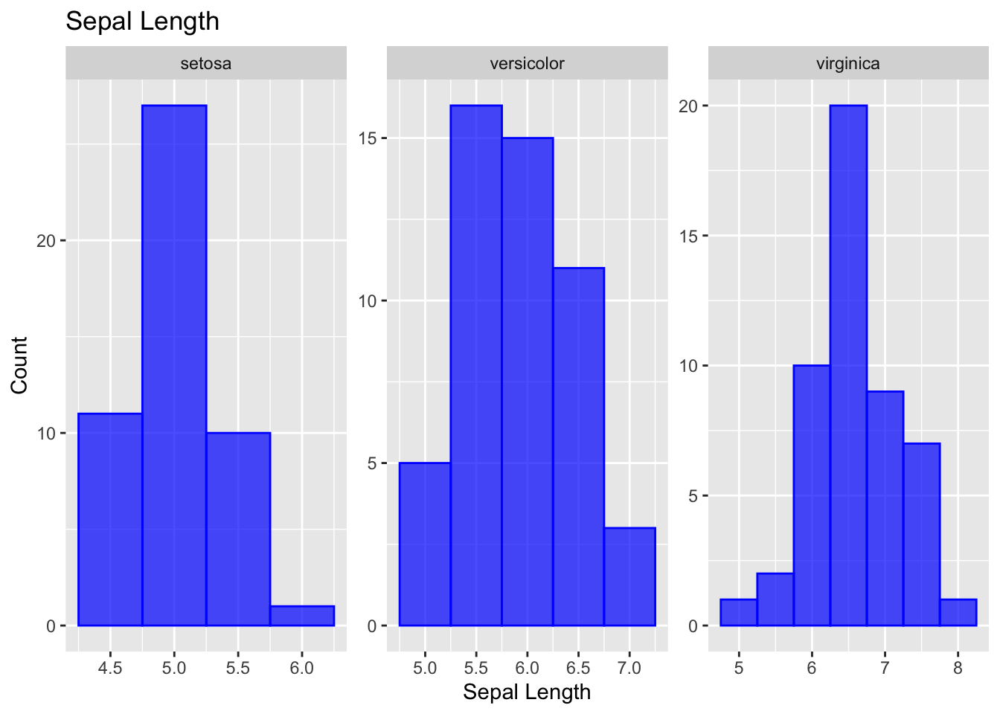
##Other visualizations ###Dot plots
ggplot(data=iris.df, aes(x= Species, y=Sepal.Length)) +
geom_dotplot(binwidth=0.1, col="blue", fill="blue", alpha=.7, stackdir = "center", binaxis = "y") +
labs (title="Sepal Length", x="Sepal Length", y="Count") ## Warning: Removed 1 rows containing non-finite values (stat_bindot).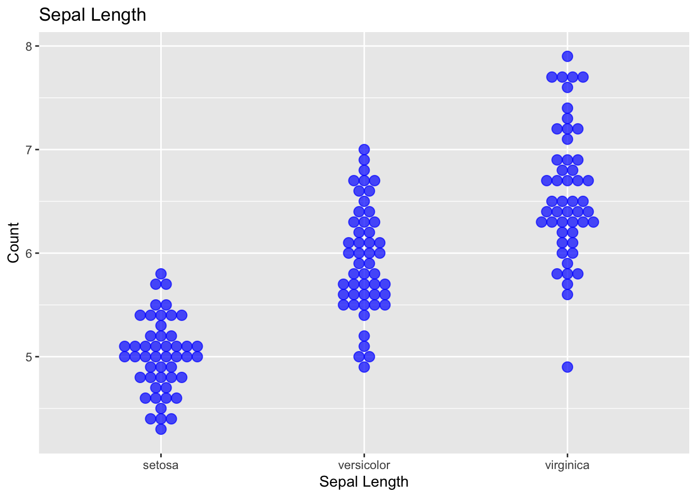
###Box and Whisker
# Box and Whisker plots with limits ####
ggplot(iris.df, aes(x = Species, y = Sepal.Length))+
geom_boxplot() ## Warning: Removed 1 rows containing non-finite values (stat_boxplot).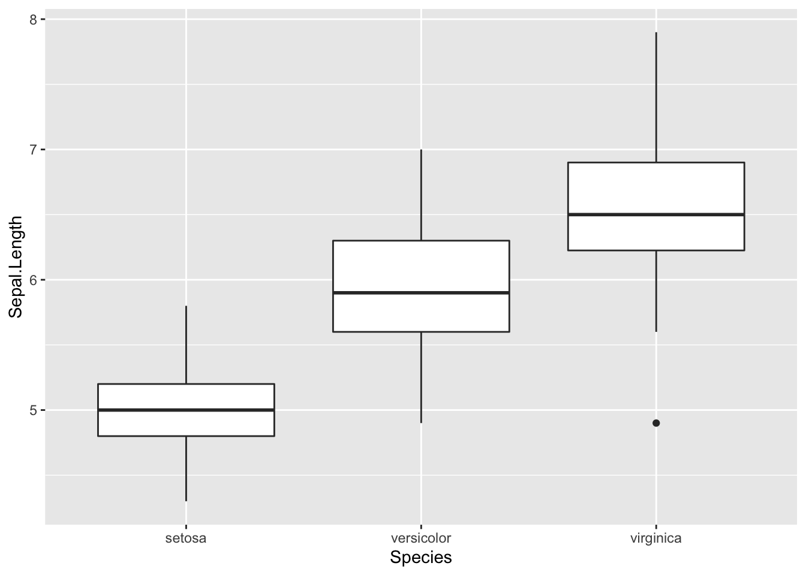
###Vioin plots
ggplot(data=iris.df, aes(x= Species, y=Sepal.Length)) +
geom_violin(col="blue", fill="blue", alpha=.7, stackdir = "center", binaxis = "y") +
labs (title="Sepal Length")+
labs (x="Sepal Length", y="Count") ## Warning: Ignoring unknown parameters: stackdir, binaxis## Warning: Removed 1 rows containing non-finite values (stat_ydensity).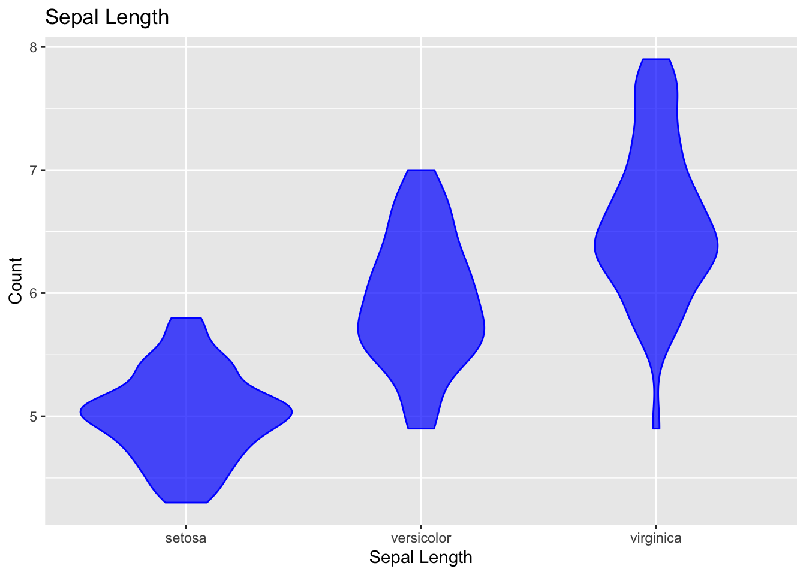
###Saving plots
violin.plot <- ggplot(data=iris.df, aes(x= Species, y=Sepal.Length)) +
geom_violin(col="blue", fill="blue", alpha=.7) +
labs (title="Sepal Length")+
labs (x="Sepal Length", y="Count")
violin.plot## Warning: Removed 1 rows containing non-finite values (stat_ydensity).#Save the file with sizes
ggsave("figures/violin.plot.tiff",plot=violin.plot, width=6, height=6, dpi = 300)## Warning: Removed 1 rows containing non-finite values (stat_ydensity).##Statistical plots
So now lets try to do a few plots that are useful for publication. the first will be a mean and standard error plot and we will try this with multiple data in wide format
##Plotting multiple variables - wide format First lets just plot Species versus Sepal Length.
ggplot(iris.df, aes(x=Species)) +
geom_point(aes(y=Sepal.Length))## Warning: Removed 1 rows containing missing values (geom_point).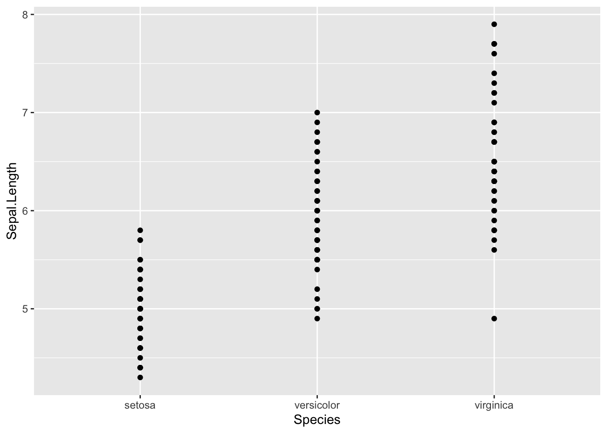
Now lets add Sepal.Width
ggplot(iris.df, aes(x=Species)) +
geom_point(aes(y=Sepal.Length), color="blue") +
geom_point(aes(y=Sepal.Width), color="red")## Warning: Removed 1 rows containing missing values (geom_point).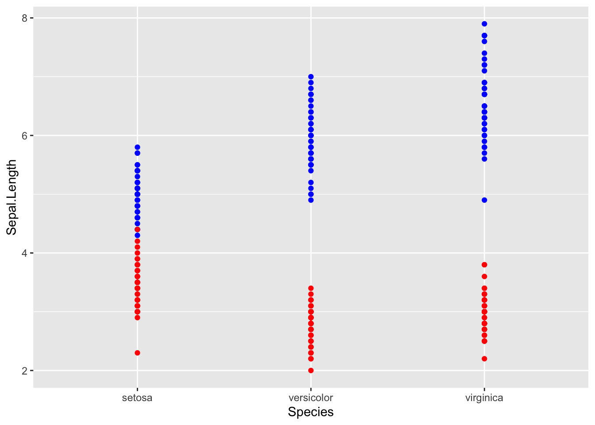
##Means Now what if you wanted only to show the means
ggplot(iris.df, aes(x=Species))+
stat_summary(aes(y=Sepal.Length), fun.y=mean, geom='point', shape=23, size=3, color="red", fill="red") ## Warning: Removed 1 rows containing non-finite values (stat_summary).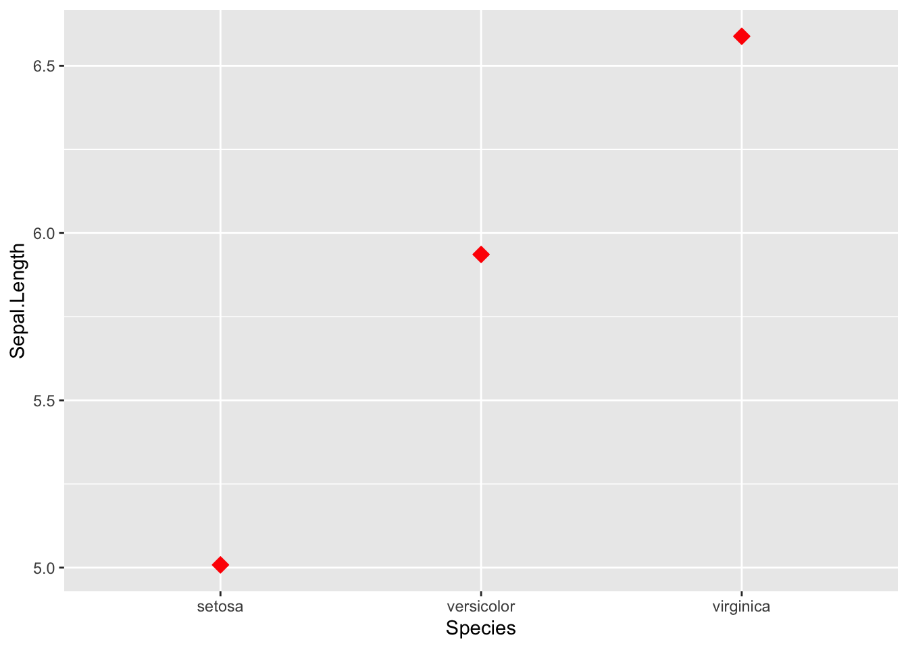
Add in the second mean Now what if you wanted only to show the means
ggplot(iris.df, aes(x=Species))+
stat_summary(aes(y=Sepal.Length), fun.y=mean, geom='point', shape=23, size=3, color="red", fill="red") +
stat_summary(aes(y=Sepal.Width), fun.y=mean, geom='point', shape=23, size=3, color="red", fill="blue") ## Warning: Removed 1 rows containing non-finite values (stat_summary).
Now your boss of course wants standard error bars on each mean… no problem
ggplot(iris.df, aes(x=Species))+
stat_summary(aes(y=Sepal.Length), fun.y=mean, geom='point', shape=23, size=3, color="red", fill="red") +
stat_summary(aes(y=Sepal.Width), fun.y=mean, geom='point', shape=23, size=3, color="blue", fill="blue") +
stat_summary(aes(y=Sepal.Length), fun.data = mean_se, geom = "errorbar", color="red", width=.1) +
stat_summary(aes(y=Sepal.Width),fun.data = mean_se, geom = "errorbar", color="blue", width=.1) ## Warning: Removed 1 rows containing non-finite values (stat_summary).
## Warning: Removed 1 rows containing non-finite values (stat_summary).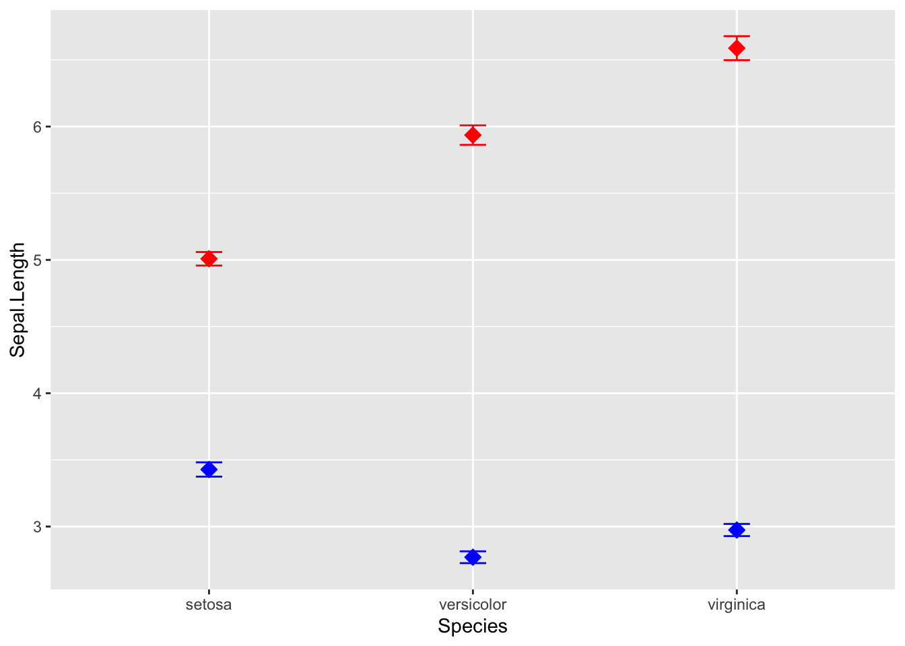
you could also do standard deviation
ggplot(iris.df, aes(x=Species))+
stat_summary(aes(y=Sepal.Length), fun.y=mean, geom='point', shape=23, size=3, color="red", fill="red") +
stat_summary(aes(y=Sepal.Width), fun.y=mean, geom='point', shape=23, size=3, color="blue", fill="blue") +
stat_summary(aes(y=Sepal.Length), fun.data = mean_sdl, geom = "errorbar", color="red", width=.1) +
stat_summary(aes(y=Sepal.Width),fun.data = mean_sdl, geom = "errorbar", color="blue", width=.1) ## Warning: Removed 1 rows containing non-finite values (stat_summary).
## Warning: Removed 1 rows containing non-finite values (stat_summary).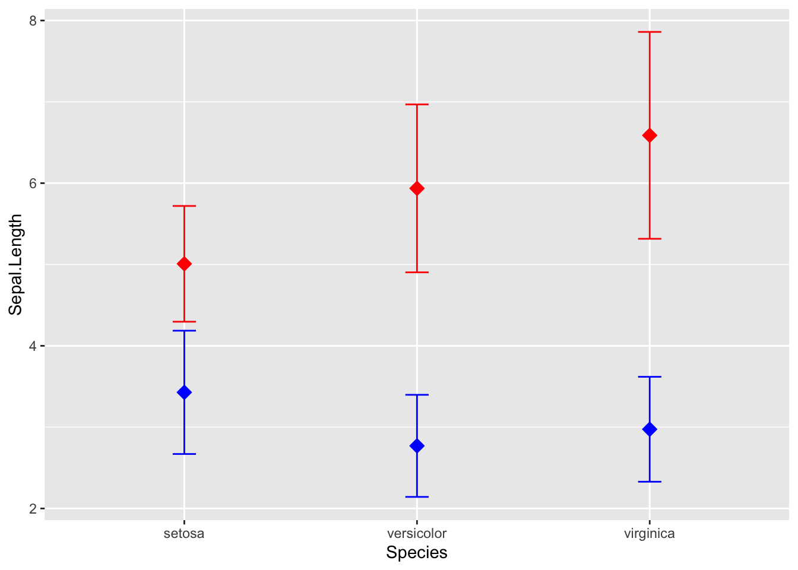
###Position_dodge - move points Now you boss says great but the error bars overlap… can you fix this?
ggplot(iris.df, aes(x=Species))+
stat_summary(aes(y=Sepal.Length), fun.y=mean, geom='point', shape=23, size=3, color="red",
fill="red", position=position_nudge(x = 0.12, y = 0)) +
stat_summary(aes(y=Sepal.Width), fun.y=mean, geom='point', shape=23, size=3, color="blue",
fill="blue") +
stat_summary(aes(y=Sepal.Length), fun.data = mean_sdl, geom = "errorbar", color="red", width=0.1,
position=position_nudge(x = 0.12, y = 0)) +
stat_summary(aes(y=Sepal.Width),fun.data = mean_sdl, geom = "errorbar", color="blue", width=0.1) ## Warning: Removed 1 rows containing non-finite values (stat_summary).
## Warning: Removed 1 rows containing non-finite values (stat_summary).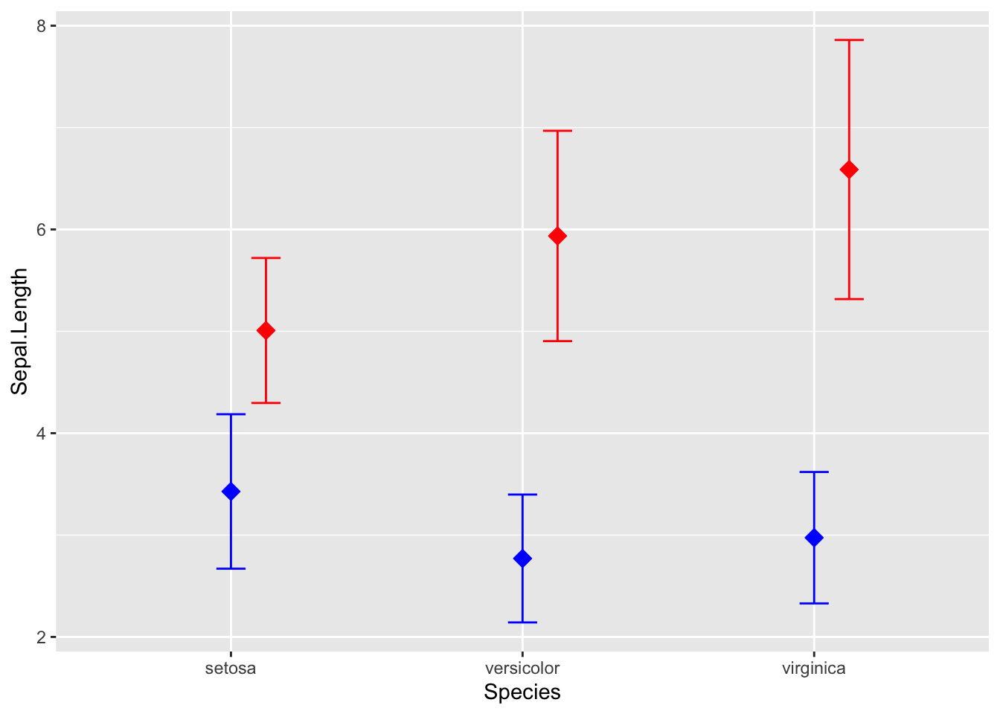